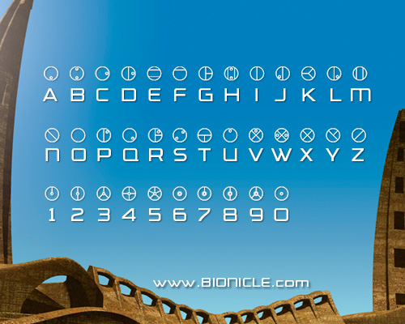

Matoran is the primary language of the Matoran Universe, spoken by the Matoran, Turaga and Toa. Here are various specific phrases and words and their English translation and meaning.
Keep in mind this doesn't include any characters' names, islands, weapons, organizations or specific Rahi.
The language of Matoran is written in a system known as Matoran Alphabet.

A
Akaku = the mask of X-Ray vision. Allows the wearer to see through solid objects.
Akilini = A major sport in Metru Nui. Involves Kanoka disks, which players throw through hoops. The game was played in small fields all over Metru Nui as well as in the Coliseum.
Antidermis = A black and green substance which is the life essence of the Makuta. It was an accidental byproduct when Protodermis was created.
Arthron = The mask of Sonar. Allows the wearer to locate objects or beings through echolocation.
Av = A prefix meaning "light".
Avohkii = The Mask of Light. Allows the wearer to project powerful beams of light energy and to turn anger into peace and enemies into allies.
B
Bio = A unit of measurement. One bio is roughly equal to 1.37 meters. For reference an average height of a Toa is 1.6 bio or 2.19 meters.
Bohrok = Insectlike mechanoids whose purpose was to clean all matter from the island of Mata Nui. As they caused harm to the Matoran villagers living on the island, they were eventually defeated by the Toa.
Boxor = A vehicle designed by an Onu-Matoran inventor to be used to defend the Matoran against the Bohrok swarms.
Bula = A berry that grew on the island of Mata Nui. It was known for its ability to restore energy.
C
Calix = The mask of Fate. Allows the wearer to perform at the absolute peak of their natural abilities, like allowing them to run or dodge better than any other of their species.
Chronicler = A Matoran who records important events on the Wall of History. A Chronicler carries a tool called The Chronicler's Staff, which can be used to scratch letters into the wall
Chute speak = Also known as Tree-speak, Chute speak is a slang spoken by Le-Matoran.
Coliseum = The sporting arena, power station and the seat of government in Metru Nui. It is the largest building in the city, used for Akilini tournaments and Vahkii training exercises, for example.
Copper mask of victory = A ceremonial - but powerless - mask gifted to the winners of various Matoran tournaments, like Akilini.
D
Daikau = A carnivorous plant found in Le-Wahi on Mata Nui. Its primary diet was insects and small birds, although snatching a passing Matoran was not unheard of.
Disk of Time = A Kanoka Disk made by combining all six Great Disks. It had the power to speed up or slow time around a target. The Disk was later carved into the Vahi; the Mask of Time
E
Elda = The mask of Detection. Allows the wearer to detect the presence of the Kanohi Ignika aka the Mask of Life.
Energized protodermis = The rarest form of Protodermis, which can induce permanent mutations or cause instant destruction. The silvery liquid would work on living beings as well as inanimate objects.
Exo-Toa = Armor capable of enchancing the powers of the beings that wore them. It was used by the Toa when they tried to stop the Bohrok invasion, among other things.
F
Faxon = The mask of Kindred. Allows the wearer to simulate the powers of creatures who share the same environment.
G
Ga = A prefix meaning "water".
Garai = The mask of Gravity. Allows the wearer to manipulate the effect of gravity on a target.
Great Disks = Six Kanoka Disks of great power. They were secretly teleported into Metru Nui to be found by the Toa Metru and were eventually merged into the Disk of Time
Great Disruption = A 400-year Matoran civil war in Metru Nui. During this time the Great Spirit Mata Nui grew weak as the working Matoran were essential for Mata Nui's health.
H
Hau = The mask of Shielding. Allows the wearer to create a force field around them, protecting them for physical attacks.
Heatstone = A small, yellowish natural heat giving rock which was used to warm a chamber hwen open glame wasn't advisable.
Hordika = A Matoran word meaning "half beast".
Huai Snowball Sling = A popular sport in Ko-Koro on Mata Nui in which players would throw snowballs at each other until only one remained.
Huna = The mask of Concealment. Allows the wearer to make themselves invisible.
I
Iden = The mask of Spirit. Allows the wearer to unleash their spirit from their physical body for a limited amount of time.
Ignalu = A popular sport in Ta-Koro on Mata Nui in which players would use lavaboards - flat, narrow pieces of hardened protodermis - to surf across the lava flows.
Ignika = The Mask of Life. Its purpose was to replenish the failing energies of Mata Nui, should taht ever become necessary.
Infected masks = A term used for masks tainted by the darkness of the Makuta. An infected mask is rusted and pitted in appearance, and the wearer would become subservient to the Makutas' will.
K
Kadin = The mask of Flight. Allows the wearer to fly under their own power.
Kakama = The mask of Speed. Allows the wearer to run great distances in an instant.
Kakama Nuva = The more powerful version of Kakama. Allows the wearer to control the molecules in their own body.
Kanohi = A Matoran word meaning "mask". The Kanohi are vital to the survival of the Matoran, Toa and Turaga and are created using Kanoka Disks. The most common type of Kanohi are the powerless ones worn by the Matoran. The Toa wear Great Masks, each of which grant the wearer specific powers. The Turaga would wear Noble Masks, which are a less powerful version of their Great Mask counterparts.
Kanohi Nuva = Term for the Great Masks exposed to and transformed by Energized Protodermis. The Kanohi Nuva were a more powerful version of their standard Great Mask counterpart.
Kanoka Disk = Round disks made of liquid Protodermis in Metru Nui. Each Disk has spesific powers and a three-digit code in the back of it, which describes its power and its level of power.
Kaukau = The mask of Water Breathing. Allows the wearer to breathe underwater for an extended period of time.
Kaukau Nuva = The more powerful version of Kaukau. Allows the wearer to stay underwater for even longer periods of time and to breathe at even greater depths.
Kio = A unit of measurement. One kio is equal to 1000 bio or 1,371 meters. For reference Metru Nui is 47,6 kio long and 24 kio wide.
Kiril = The mask of Regeneration. Allows the wearer to restore inanimate objects or building to their precious, undamaged conditions and heal living beings.
Ko = A prefix meaning "ice".
Kolhii = A major sport on Mata Nui. Players in two or more teams compete to get a Kolhii ball - a lightweight sphere bound in steel - into the opponent's goal. The most popular version of the sport includes Kolhii staffs that are used to hurl the ball. Players defending the goals carry Kolhii shields to deflect shots.
Komau = The mask of Mind Control. Allows the wearer to make others do their bidding.
Koro = A matoran word meaning "village". There are six villages on Mata Nui: Ga-Koro, Ko-Koro, Le-Koro, Onu-Koro, Po-Koro and Ta-Koro.
Kraahkan = The Great Mask of Shadows. Allows the wearer to create darkness, anger and fear.
Kualsi = The mask of Quick Travel. Allows the wearer to teleport to a location that is in their line of sight.
L
Le = A prefix meaning "air".
Lightstone = A glowing crystal mined in Metru Nui and on Mata Nui. They were used to provide illumination.
M
Madu = A coconut-like fruit found on Mata Nui which was known to explode because of their volatile juices.
Mahiki = The mask of Illusion. Allows the wearer to shape-shift or create illusions to confound enemies.
Matatu = The mask of Telekinesis. Allows the wearer to move targets within their range of view.
Mio = A unit of measurement. One mio is equal to 1000 kio or roughly 1370 kilometers.
Miru = The mask of Levitation. Allows the wearer to ride on air currents without falling to earth.
N
Naming Day = A Matoran holiday which celebrates individuals who have performed some great service and who have been rewarded with name changes.
Ngalawa = A popular boat-racing competition in Ga-Koro.
Nui = The Matoran word for 'large'
O
Olmak = The mask of DImensional Gates. Allows the wearer to open portals to other dimensios and either pass through them or force others into them.
P
Pakari = The mask of Strength. Allows the wearer to increase their physical power.
Pakari Nuva = The more powerful version of Pakari. Allows the wearer to increase their strength and others around them to the ultimate.
Pehkui = The mask of Diminishment. Allows the wearer to shrink to a minimum height of 15 centimeters while still retaining their normal strength.
Po = A prefix meaning "stone".
Protodermis = The most important substance in the BIONICLE universe. Virtually everything known in the Matoran Universe is made of protodermis, and it can exist in solid, liquid and gasepis form.
R
Rahi = A Matoran word roughly translated to "not us". Applies to all fish, birds, insects and reptiles in the Matoran Universe.
Ranama = The mask of Translation. Allows the wearer to understand written and spoken languages.
Rode = The mask of Truth. Allows the wearer to see through any deception or disguise.
Ruru = The mask of Night Vision. Allows the wearer to see in the dark and grants them with X-ray vision.
S
Sanok = The mask of Accuracy. Allows the wearer to use any object as a missile weapon and to hit whatever it is aimed at.
Spirit Stars = Points of light in the sky that represent Toa. Six stars above Mata Nui and Voya Nui were believed to represent the Toa Mata and the Toa Inika respectively.
Suletu = The mask of Telepathy. Allows the wearer the ability to read thoughts and project them.
Suva = A shrine dedicated to Toa. They mainly function as storages for Kanohi and weapons.
T
Ta = A prefix meaning "fire".
Toa Stones = Powerful relics that are linked to the creation or coming of Toa heroes. Two sets of Toa stones are currently on record as existing.
Tryna = The mask of Reanimation. Allows the wearer to fill deceased beings with artificial life energy for a specific amount of time.
V
Vahi = The Great Mask of Time. Allows the wearer to slow down or speed up time around a target.
Volitak = The mask of Stealth. Allows the wearer to make themselves camouflaged and not to be heard by enemies.
Vuata Maca = A tree that provided fruit which the Onu-Matoran use for energy. The tree, in turn, is energized by Vuata Maca Crystals.
W
Wahi = A Matoran word meaning "region". The island of Mata Nui is divided into six regions: Ga-Wahi, Le-Wahi, Onu-Wahi, Po-Wahi and Ta-Wahi.
Widgets = Currency used by the Matoran on Mata Nui.
Z
Zatth = The mask of Summoning. Allows the wearer to call creatures to their aid.